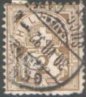
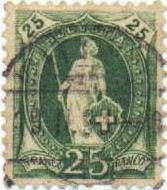
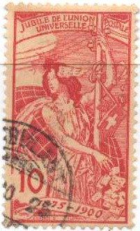

Return To Catalogue - Switzerland overview
Note: on my website many of the
pictures can not be seen! They are of course present in the
catalogue;
contact me if you want to purchase the catalogue.



2 c brown 3 c grey 5 c brown 5 c green 10 c red 12 c blue 15 c yellow 15 c brown
As the stamps of the previous issue, these stamps have an impressed watermark 'Cross in an ellipse', or 'Cross' (1907):

(watermark 'Cross in an ellipse' seen from the backside of a 15 c
yellow stamp)
These stamps exist issued on paper with small silk threads, example:
(paper with silk threads)
Value of the stamps |
|||
vc = very common c = common * = not so common ** = uncommon |
*** = very uncommon R = rare RR = very rare RRR = extremely rare |
||
| Value | Unused | Used | Remarks |
| Watermark 'Cross in an ellipse', perforated 11 1/2, normal paper (1882) | |||
| 2 c | RR | R | |
| 5 c brown | RR | *** | |
| 10 c | RR | *** | |
| 12 c | R | *** | |
| 15 c yellow | RR | R | |
| Watermark 'Cross in an ellipse', perforated 11 1/2, paper with silk threads (1882) | |||
| 2 c | * | vc | |
| 3 c | * | * | |
| 5 c brown | * | c | |
| 5 c green | * | vc | |
| 10 c | * | vc | |
| 12 c | ** | c | |
| 15 c yellow | *** | ** | |
| 15 c brown | ** | c | |
| Watermark 'Cross', paper with silk threads (1907) | |||
| 2 c | * | c | |
| 3 c | * | * | |
| 5 c green | * | c | |
| 10 c | * | c | |
| 12 c | * | c | |
| 15 c brown | *** | * | |


Forgery of the 2 c value, pretending to be the rare value on
normal paper. The forger has whitened the silk threads.



20 c orange 25 c green 25 c blue 30 c brown 40 c grey (2 types,'40' different) 50 c blue 50 c green 1 F red-lilac 1 F red (1903) 3 F brown
As the numeral issue of 1882, this issue exists on paper with small silk threads (see there for an example).
Value of the stamps |
|||
vc = very common c = common * = not so common ** = uncommon |
*** = very uncommon R = rare RR = very rare RRR = extremely rare |
||
| Value | Unused | Used | Remarks |
| Watermark 'Cross
in an ellipse', normal paper (1882) Perforation ranging from 9 1/2 to 12 |
|||
| 20 c | *** | c | |
| 25 c green | *** | c | |
| 25 c blue | *** | c | |
| 30 c | *** | c | |
| 40 c | *** | c | 2 types, '40' different (see above), second type: ** |
| 50 c blue | *** | * | |
| 50 c green | *** | * | |
| 1 F red-lilac | *** | c | |
| 1 F red | *** | * | |
| 3 F | R | * | |
| Watermark 'Cross', normal paper (1905) | |||
| 20 c | ** | c | Specialists distinguish between original and retouched stamps |
| 25 c blue | *** | * | Specialists distinguish between original and retouched stamps, differing in the words 'FRANCO'. |
| 30 c | ** | c | |
| 40 c | *** | c | second type |
| 50 c green | *** | * | |
| 1 F red | *** | * | |
| 3 F | RR | ** | Specialists distinguish between original and retouched stamps |
| Watermark 'Cross', paper with silk threads (1907) | |||
| 20 c | ** | * | |
| 25 c blue | *** | c | |
| 30 c | ** | * | |
| 40 c | *** | * | second type |
| 50 c green | *** | * | |
| 1 F red | *** | * | |
| 3 F | RR | ** | |
I have seen some imperforate 'Paris reprints' in different colours: 25 c red, 25 c light green, 25 c dark green, 25 c olive, 40 c orange, 40 c bluish grey, 40 c red, 40 c violet, 40 c dark green, 40 c light green and 40 c brown (all the 40 c values with closed upper part of the '4'). Sometimes they are also referred to as 'proofs'.


'Paris reprints'
In https://www.franceandcolonies.org/philatelist/116.pdf it is explained that the printer of these stamps, Max Girardet from Bern, was allowed to keep the printing plates after his contract with the Swiss postal authorities had finished in 1907. He went to Paris were with the help of a dealer, they made 'Paris proofs' of the 25 and 40 c value in a variety of colors.

Mystery item, no value inscriptions and imperforate, some kind of
proof?
Some mute cancels, large pattern of squares and smaller pattern
of squares. I don't know where these mute cancels were used.

Fournier forgery of the 50 c in blue; I believe Fournier only
used this 'forgery' to illustrate his pricelists. Nevertheless,
it can be found in 'The Fournier Album of Philatelic Forgeries'.
See also the Fournier Album of Philatelic
Forgeries for more information.

A very small sized 20 c stamp, probably some kind of cut out from
a souvenir card? Next to it a normally sized stamp.


5 c green 10 c red 25 c blue
I have seen postcards in the above design in the values: 5 c green and 10 c red. These stamps have perforation 11 1/2, the watermark is 'Cross in an ellipse'. Specialists distinguish between normal printed stamps and finely engraved stamps.
Value of the stamps |
|||
vc = very common c = common * = not so common ** = uncommon |
*** = very uncommon R = rare RR = very rare RRR = extremely rare |
||
| Value | Unused | Used | Remarks |
| 5 c | * | c | |
| 10 c | * | c | |
| 25 c | *** | ** | |
Switzerland issues from 1907-1920
{kind=link}